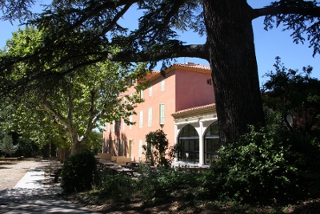
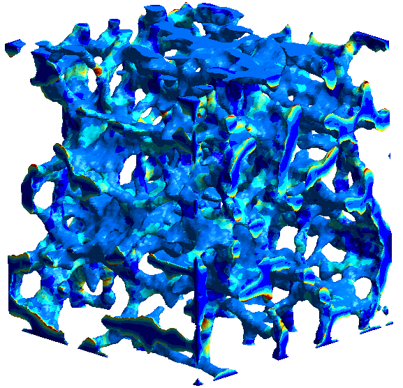

CEMRACS 2013
Modéliser et simuler la complexité: approches stochastiques et déterministes
22 Juillet 2013 - 30 Août 2013
Organisateurs:
Comme chaque année, le CEMRACS aura lieu au CIRM.
L'objectif de ce CEMRACS est de s'intéresser aux modélisations et aux méthodes numériques qui combinent des approches déterministes et des approches stochastiques.
Il apparaît en effet que les problèmes relevant de cette double
compétence (probabilités, et analyse numérique déterministe) sont de
plus en plus nombreux, et les formations des mathématiciens appliquées
n'y sont souvent pas bien adaptées. Un des buts du CEMRACS est donc de
favoriser des échanges entre diverses communautés de mathématiciens
appliqués, autour de problèmes industriels ou de problèmes provenant
d'autres champs scientifiques (physique, chimie, biologie).
Cette thématique est actuellement au coeur de nombreuses problématiques
industrielles (la propagation des incertitudes, la modélisation à
l'échelle moléculaire, etc...), et semble aussi prendre une place de
plus en plus importante dans plusieurs champs scientifiques en dehors
des mathématiques appliquées (modélisation en biologie, chimie
moléculaire, physique statistique computationnelle, etc...).
Présentation scientifique du CEMRACS
La première semaine (du 22 juillet au 26 juillet 2013) sera
consacrée à une série de cours et d'exposés. Les cours seront donnés
par:
- Albert Cohen : Approximation non-linéaire pour les problèmes en grande dimension
- Josselin Garnier : Evénements rares: modèles et simulations
- Gabriel Lord : Equations aux dérivées partielles stochastiques
- Félix Otto : Homogénéisation stochastique et matériaux aléatoires
- Gilles Pagès : Quantification et méthodes quasi Monte Carlo
Slides for the computational facilities:
Slides for the special event "Mathématiques pour la planète Terre":
Slides for the lectures and contributed talks:
Slides for the seminars:


Nos partenaires
Back to homepage.